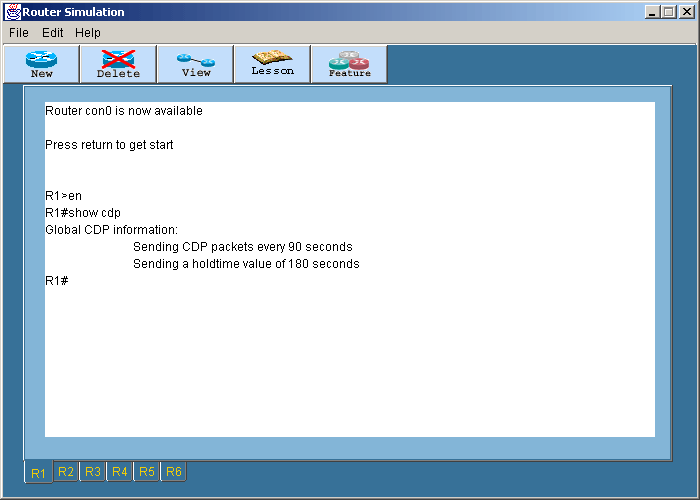
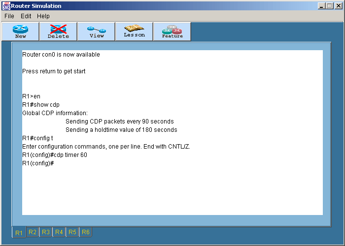

Cisco Discovery Protocol
Cisco Discovery Protocol
เป็นโพรโตคอลที่ซิสโก้สร้างขึ้นเพื่อ gather information about neighbor
cisco device
- ล็อกอินเข้าเราเตอร์ที่ต้องการ หลังจากนั้นเข้าสู่ Privilege โหมดโดยพิมพ์คำสั่ง
En หรือ Enable
แล้วกด Enter
- ที่ R1 พิมพ์คำสั่ง Show cdp แล้ว Enter

ข้อมูลที่แสดงผลออกมาหมายถึง CDP แพ็กเก็ตจะถูกส่งออกไปทุกอินเทอร์เฟสที่
active ทุกๆ 90 วินาที และมีค่า Holdtime 180 วินาที คือเมื่อได้รับข้อมูลจาก
CDP ก็จะเก็บไว้เป็นเวลา 180 วินาที ถ้า R1 ไม่ได้รับข้อมูลอะไรจาก neighbor
เป็นเวลา 180 วินาที ข้อมูลนั้นจะถูกลบทิ้งไป
- ถ้าต้องการให้แพ็กเก็ต CDP ถูกส่งออกไปทุกๆ 60 วินาที จะใช้คำสั่ง
R1(config)#cdp timer 60
สำหรับค่าของช่วงเวลาจะอยู่ระหว่าง 5-900

- สำหรับคำสั่งที่เกี่ยวกับการดูค่า CDP ของโปรแกรมนี้จะมี 3 คำสั่งหลัก
คือ
- Show CDP entry
- Show CDP interface
- Show CDP neighbors
- คำสั่ง Show CDP entry จะต้องมีการส่ง argument ไปให้ด้วย ซึ่ง argument
นี้ อาจส่งเป็น
- Show CDP entry *
- Show CDP entry <Router Name>
- คำสั่ง Show CDP interface เป็นคำสั่งสำหรับแสดงข้อมูลที่ถูก encapsulate
ไว้ที่อินเทอร์เฟส ซึ่งข้อมูลนี้จะมีการปรับเปลี่ยนทุกๆ 60 วินาที (สามารถเปลี่ยนแปลงได้ตามข้อ
3) และข้อมูลจะถูกเก็บได้ 180 วินาทีตามที่ได้กล่าวในข้อ 2
- ใช้คำสั่ง Show CDP neighbors เพื่อดูข้อมูลการเชื่อมต่อกับอุปกรณ์อื่นข้างเคียง
ข้อมูลของอุปกรณ์ข้างเคียงที่แสดงออกมาจะมีดังนี้
- Neighbor Device ID : คือชื่อของเราเตอร์ข้างเคียง ได้จากการที่เราเตอร์มีการแลกเปลี่ยน
CDP information กัน
- Local interface : คืออินเทอร์เฟสที่เราเตอร์ได้รับข้อมูล CDP มา
- Holdtime :
- Capability : R สำหรับเราเตอร์ และ S สำหรับสวิตซ์
- Platform : ประเภทของอุปกรณ์
- Port ID : คืออินเทอร์เฟสของเราเตอร์ที่รับข้อมูล CDP
สำหรับโหมดการทำงานทั้งหมดของเราเตอร์สามารถดูได้ในสรุปคำสั่งทั้งหมด
|
 Lesson 10
Lesson 10